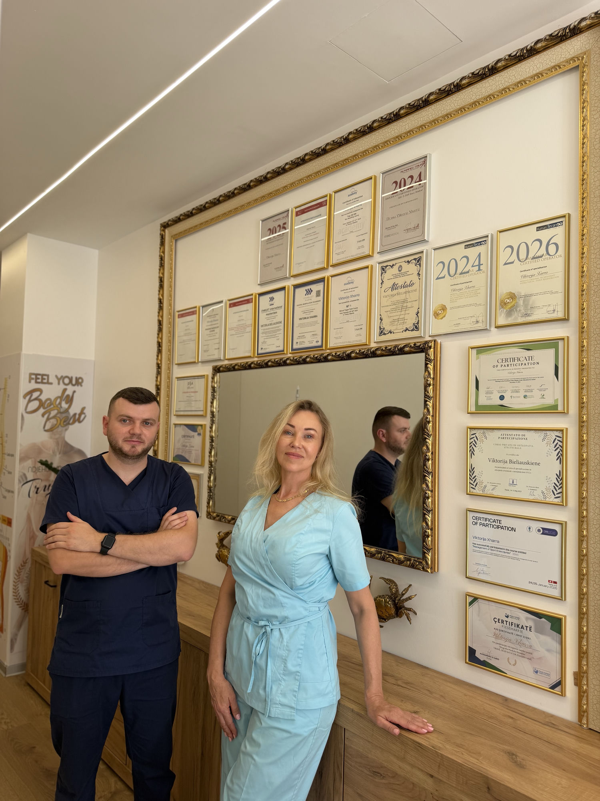

Fizioterapi profesionale në Durrës nga 3000 lekë — terapi manuale, rehabilitim sportiv dhe rikuperim pas operacionit. Rezervo në +355 69 401 3013.

Teknika praktike për rikthimin e lëvizshmërisë së nyjeve, lirimin e tensionit dhe përmirësimin e funksionit të indeve të buta.
Programe të strukturuara rikuperimi për sportistë të çdo niveli, nga menaxhimi i dëmtimeve akute deri te protokollet e kthimit në sport.
Vlerësim gjithëpërfshirës i posturës dhe programe ushtrimesh korrigjuese për të adresuar çrregullimet e shtrirjes.
Qasje të bazuara në evidencë për dhimbjen kronike dhe akute, duke kombinuar terapinë manuale me ushtrime terapeutike.
Programe lëvizjesh të synuara për rikthimin e amplitudës së lëvizjes, përmirësimin e fleksibilitetit dhe ndërtimin e forcës funksionale.
Rehabilitim i udhëhequr pas kirurgjisë ortopedike, me protokolle progresive të përshtatura për procedurën tuaj.
| Shërbimi | Çfarë trajton | Nga |
|---|---|---|
| Terapi Manuale | Dhimbje shpine e qafe, tension muskulor, nyje të ngurta | 3000 lek |
| Rehabilitim Sportiv | Dëmtime sportive dhe kthim i sigurt në aktivitet | 3000 lek |
| Menaxhimi i Dhimbjes | Dhimbje kronike e akute të shpinës dhe qafës | 3000 lek |
| Korrigjim Postural | Qëndrim i keq, çekuilibra dhe shtrirje e gabuar | 3000 lek |
| Trajnim Lëvizshmërie | Amplitudë lëvizjeje, fleksibilitet dhe forcë funksionale | 3000 lek |
| Rikuperim Pas-Operativ | Rikuperim pas kirurgjisë ortopedike | 3000 lek |
Trajtimet me aparatura (Shock Wave, Tecar, Lazer, Magnetoterapi) nga 4000 lekë — shihni listën e plotë te Çmimet.
Me përvojë të gjerë në fushën e fizioterapisë, Dr. Viktorija Xharra është një nga emrat më të respektuar në trajtimin fizik dhe rehabilitimin. Ajo u diplomua në Universitetin e Bolonjës, një nga universitetet më prestigjioze në Evropë, si dhe në Universitetin "Zoja e Këshillit të Mirë", ku sot shërben edhe si pedagoge.
Përkushtimi ndaj pacientëve, profesionalizmi dhe njohuritë e thella shkencore e bëjnë atë një figurë të rëndësishme në botën moderne të fizioterapisë. Dr. Xharra i kushton rëndësi qasjes njerëzore dhe trajtimeve të personalizuara, duke ndihmuar çdo pacient të rikthejë ekuilibrin dhe lëvizshmërinë e trupit në mënyrë të sigurt dhe efikase.
Vlerësim i plotë i gjendjes suaj, modeleve të lëvizjes dhe qëllimeve të trajtimit.
Një hartë rrugore e personalizuar që kombinon qasjet terapeutike më efektive për ju.
Trajtim praktik i shoqëruar me ushtrime të udhëhequra për rindërtimin e forcës dhe lëvizshmërisë.
Mbështetje e vazhdueshme dhe strategji parandaluese për t'ju mbajtur në lëvizje pa dhimbje.
Përdorim pajisje moderne dhe metoda të bazuara në evidencë për trajtim efektiv dhe të sigurt. Qëllimi ynë nuk është thjesht të heqim simptomat, por të rikthejmë shëndetin, lëvizshmërinë dhe cilësinë e jetës.
Përshpejton shërimin e indeve, ul inflamacionin dhe lehtëson dhimbjen — ideale për dëmtime dhe dhimbje kronike.
Fusha magnetike që përmirësojnë qarkullimin, ulin edemat dhe përshpejtojnë rikuperimin — efektive për nyjet dhe shtyllën kurrizore.
Një nga metodat më efektive për dhimbjen kronike — rigjeneron indet, shkrin depozitat e kalciumit dhe rikthen lëvizshmërinë.
Valë zanore për ngrohjen e thellë të indeve, përmirësimin e qarkullimit dhe përshpejtimin e rikuperimit.
Veprim i thellë në inde me energji radiofrekuence — përshpejton rikuperimin, ul inflamacionin dhe dhimbjen.
Elektrostimulim që ul ndjeshëm dhimbjen dhe ndihmon në relaksimin e muskujve.
Teknika të buta me duar për muskujt, nyjet dhe fascet — heqin dhimbjen, lehtësojnë tensionin dhe rikthejnë lëvizshmërinë.
Masazh i butë që stimulon qarkullimin e limfës dhe nxjerrjen e lëngjeve — ul edemat dhe përshpejton rikuperimin.
Kombinim i teknikave të buta të nyjeve me masazh terapeutik — rikthen amplitudën e lëvizjes dhe ul dhimbjen.
Program individual lëvizjesh për forcimin e muskujve, stabilizimin e shtyllës dhe parandalimin e dhimbjeve.
Teknikë vakumi me kupa speciale që përmirëson qarkullimin, liron tensionin muskular dhe nxit rigjenerimin natyror të indeve.
Teknika manuale për rikthimin e pozicionit të saktë të nyjeve dhe shtyllës kurrizore — lirojnë tensionin muskular, përmirësojnë qëndrimin dhe heqin dhimbjen.
Rigjenerim me plazmën e vetë pacientit, të pasur me trombocite — rinon lëkurën e fytyrës, qafës e dekolltesë, redukton rrudhat dhe stimulon rritjen e flokëve.
Koktej vitaminash, mikroelementësh dhe acidi hialuronik që injektohet në lëkurë — hidratim i thellë, ngjyrë më e mirë, më pak rrudha dhe lëkurë më elastike.
Për konsultë dhe rezervime, na kontaktoni në +355 694 013 013.
Huria — pas një goditjeje në tru, humbi plotësisht lëvizshmërinë e dorës dhe këmbës.
Rehabilitimi filloi në shtëpi me teknika pasive për të ruajtur lëvizshmërinë e nyjeve dhe parandaluar atrofinë e muskujve. Më pas vazhdoi në klinikë me 4 muaj fizioterapi gjithëpërfshirëse.
Vërehet rikuperim gradual i aktivitetit motorik — pacientja po fillon të aktivizojë vetë lëvizjet. Rehabilitimi vazhdon, pasi rikuperimi i plotë pas goditjes kërkon kohë (deri në një vit e më shumë).
Pacient — mbërriti në klinikë në gjendje akute, nuk mund të ecte vetë dhe lëvizte vetëm me mbështetjen e dy personave.
Terapi intensive: fizioterapi, terapi manuale, TECAR-terapi, teknika mobilizimi dhe terapi me Shock Wave.
Pas kursit të procedurave, pacienti filloi të lëvizë vetë dhe doli nga klinika pa paterica dhe pa ndihmë. Më pas iu caktuan ushtrime aktive për të konsoliduar rezultatin.
Sportiste 12–13 vjeçe (volejboll) — dëmtoi të dy gjunjët gjatë një uljeje të gabuar. Pesë specialistë rekomanduan operacion; nga dhimbja e fortë nuk lëvizte dot dhe nuk shkonte në shkollë.
U zgjodh trajtimi konservativ. Gjuri i parë u rikuperua në 4 seanca; gjuri i dytë ishte më kompleks dhe kërkoi terapi shtesë.
Megjithë parashikimet se nuk do të kthehej në sport, pacientja u rikuperua plotësisht dhe iu rikthye volejbollit.
Kirill — nuk mund të shkelte në këmbë për shkak të dhimbjes dhe çrregullimit të funksionit.
Tejpim (taping), banderim dhe magnetoterapi. Kursi përfshiu 5 seanca.
Funksioni i këmbës u rikthye dhe pacienti iu kthye lëvizjes normale pa dhimbje.
💬 Çdo rast është individual dhe rezultatet varen nga gjendja e pacientit, koha e fillimit të trajtimit dhe respektimi i rekomandimeve të specialistit.
Kam vuajtur nga dhimbjet e shpinës për shumë vite dhe pas një periudhe stresuese me udhëtime, kisha nevojë të dëshpëruar për lehtësim. Dy trajtime në këtë vend dhe ndihem si person i ndryshuar, shpina ime është ende mirë ditë pas trajtimit. Ishin shumë të dobishëm, të sjellshëm, profesionalë dhe vërtet e dinë çfarë bëjnë. Bëra masazhin dhe një trajtim me Human Tecar. E rekomandoj shumë nëse gjendeni në Durrës.
Kisha dhimbje shpine që më mundonte prej vitesh dhe gjeta zgjidhjen vetëm në këtë klinikë. Stafi është shumë profesional dhe i guximshëm, çka më bëri të ndihesha shumë rehat. Pas disa seancave vura re rezultate të shkëlqyera! Dhimbja u zhduk. E rekomandoj vërtet këtë klinikë për të gjithë, është një ndryshim jete!!!
Klinika Volga Fizioterapi është një shembull i shkëlqyer i profesionalizmit dhe kujdesit të veçantë për pacientët. Ambienti është i ngrohtë dhe i pastër, dhe stafi është gjithmonë gati për të ofruar mbështetje dhe trajtim me përkushtim të madh. Arritja e rezultateve pozitive dhe përmirësimi i shëndetit të pacientëve është gjithmonë prioritet, dhe kjo e bën klinikën një vend të besuar dhe të preferuar.
Çmimet fillojnë nga 3000 lekë për terapi manuale, limfodrenazh dhe ushtrime terapeutike. Trajtimet me aparatura: ultratingull dhe TENS 4000 lekë, lazer 4500 lekë, magnetoterapi dhe Tecar 5000 lekë, Shock Wave 7000 lekë. Për rastin tuaj specifik, na kontaktoni në +355 69 401 3013.
Jo. Mund të rezervoni drejtpërdrejt një konsultë te VOLGA pa referim. Në vizitën e parë bëjmë një vlerësim të plotë dhe dizajnojmë një plan trajtimi individual sipas gjendjes, trupit dhe qëllimeve tuaja.
Varet nga gjendja. Shumë pacientë ndjejnë lehtësim që në seancat e para, ndërsa rastet kronike kërkojnë një cikël më të gjatë. Numrin e saktë e përcaktojmë pas vlerësimit në vizitën e parë dhe e përshtatim gjatë trajtimit.
Përdorim teknologji moderne: Shock Wave, Human Tecar, Lazer, Magnetoterapi (Storz), Ultratingull dhe TENS. Ofrojmë gjithashtu terapi manuale, rehabilitim sportiv, rikuperim pas operacionit, limfodrenazh, cupping dhe trajtime estetike (PRP, mezoterapi).
Jemi të hapur nga e hëna në të shtunë, 09:00–20:00 (e diela pushim). Për të rezervuar, na telefononi ose na shkruani në WhatsApp në +355 69 401 3013, ose na gjeni në Instagram @volga_fizioterapi.
Rezervoni një konsultë dhe lini ekipin tonë të dizenjojë një plan trajtimi rreth nevojave, trupit dhe qëllimeve tuaja.
Thirr +355 694 013 013Adresa
Rruga Currila, Durrës 2000, Shqipëri
Merr udhëzime →
Telefoni
+355 694 013 013
Email
volga.fisioterapia@gmail.com
Instagram
@volga_fizioterapi
Orari
Hën–Sht: 09:00–20:00
Die: Mbyllur